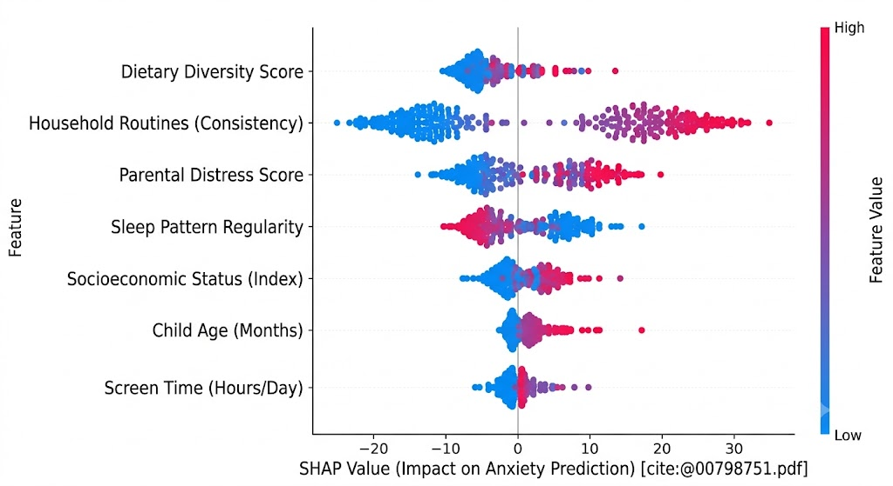
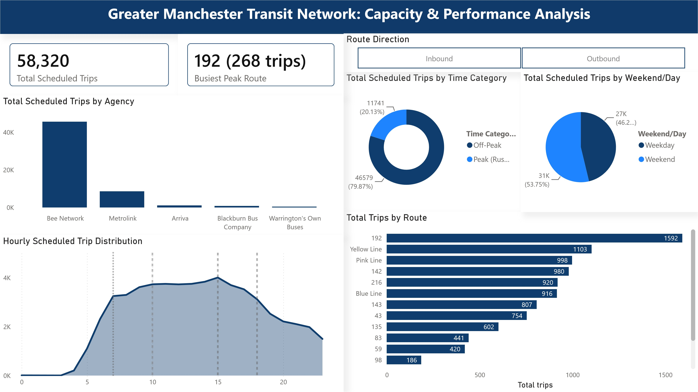
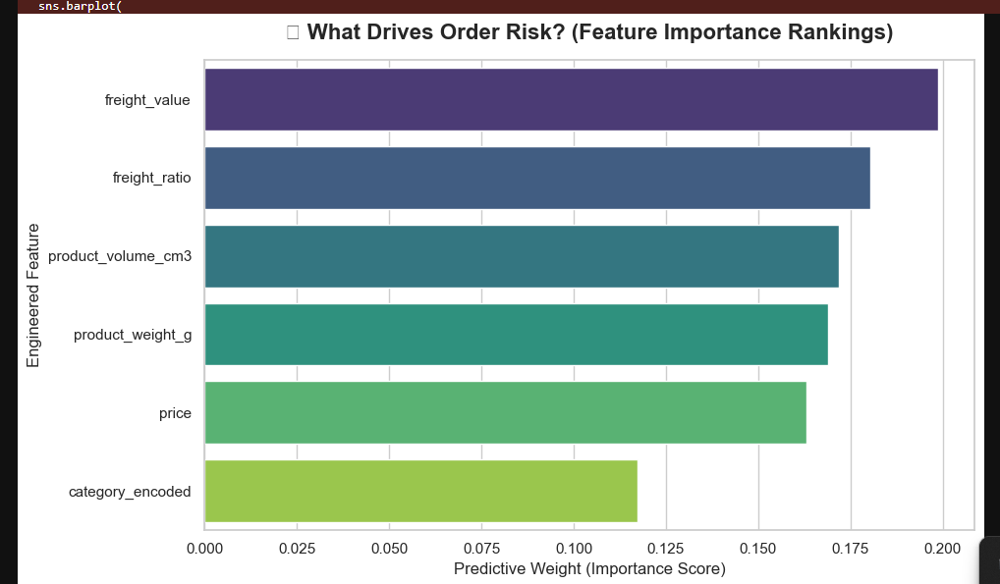

Featured Analytical Projects

ML Predictive Pipeline: Child Health Cohort Analysis
Engineered an end-to-end predictive analytics pipeline in Python evaluating four supervised classifiers on an analytic sample of 14,914 records from the UK Millennium Cohort Study. Structured robust class-imbalance treatments and integrated SHAP (Shapley Additive Explanations) metrics to decode black-box models, mapping exact environmental risk contributions over baseline assumptions.

Greater Manchester Public Transit Analytics Architecture
Power BI Desktop | Power Query ETL | Relational Star Schema Data Modeling
Engineered an end-to-end data processing pipeline converting raw, fragmented regional GTFS transit schedules (58,320 records) into an automated executive dashboard. Bypassed systemic text-corruption trends to uncover and rectify an undetected 16.54% metric skew. Authored relationship-aware DAX expressions with variable caching (VAR/RETURN) to map continuous network timelines into Peak vs. Off-Peak bins without context transition resource drag.

Predictive Supply Chain Pipeline: From SQL Staging to Explainable ML
PostgreSQL | Python (pandas & scikit-learn) | SHAP (Explainable AI) | Random Forest
Engineered an end-to-end data pipeline extracting 110k+ transactional records from a local PostgreSQL instance to proactively mitigate late-stage e-commerce order cancellations. Implemented custom python feature engineering to calculate spatial volumes and consumer friction ratios. Resolved an extreme ~0.5% minority class imbalance via stratified splitting and balanced random forests to successfully flag 25% of all system cancellations at ingestion, removing 'black-box' limitations using SHAP directional visual matrices.

Customer Sentiment & NLP Analysis Pipeline
Built a text analytics processing pipeline using Python to parse, clean, and classify over 3,600 unorganized customer feedback interaction records. Leveraged text aggregation and regex techniques to construct an analytical engine achieving 78% prediction model accuracy, isolating targeted stages of user retention risk.

Process Automation & Operational BI Dashboard
Designed and deployed interactive, self-service reporting environments across Power BI and Looker Studio to break data operational silos. Conducted requirements scoping with stakeholders and used Excel Power Query to architect reusable data governance and automated pipeline transformation workflows.

Commercial Risk & Database Optimization Framework
Developed a relational database framework using advanced SQL multi-table JOIN operations and subqueries to audit multi-variable time-series commercial datasets. Performed records validation to eliminate duplication anomalies and structured risk matrix forecasts to optimize performance tracking.